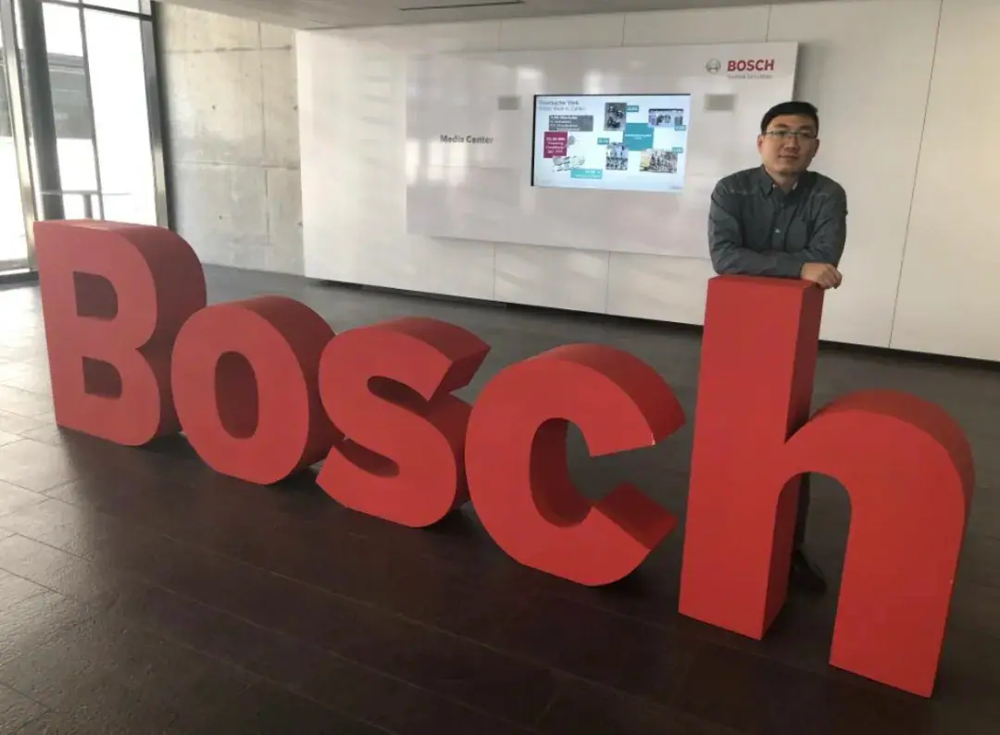
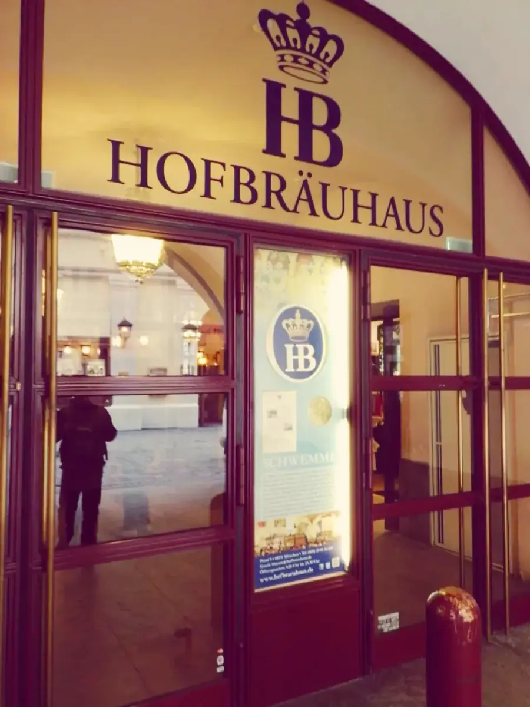
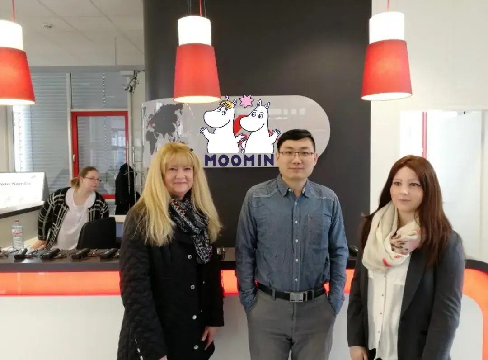
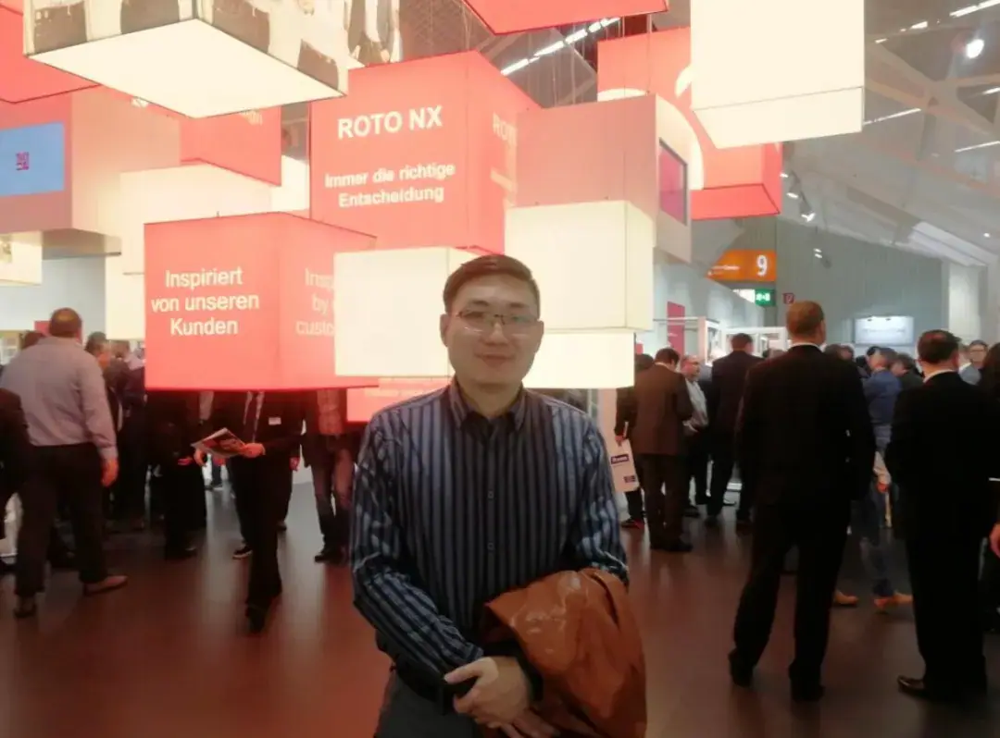
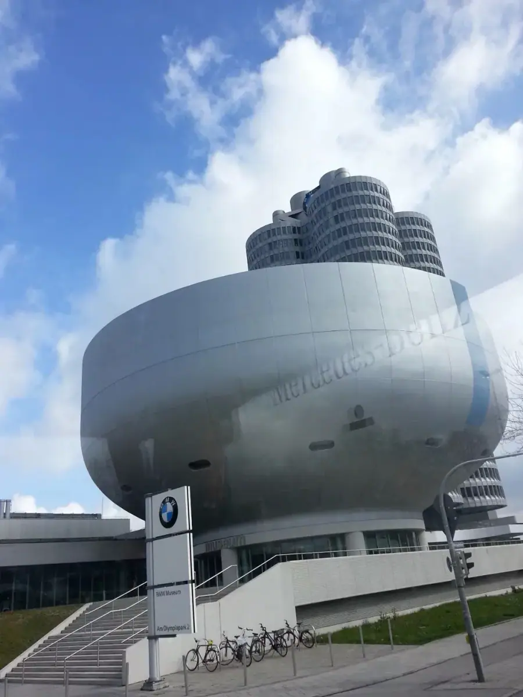
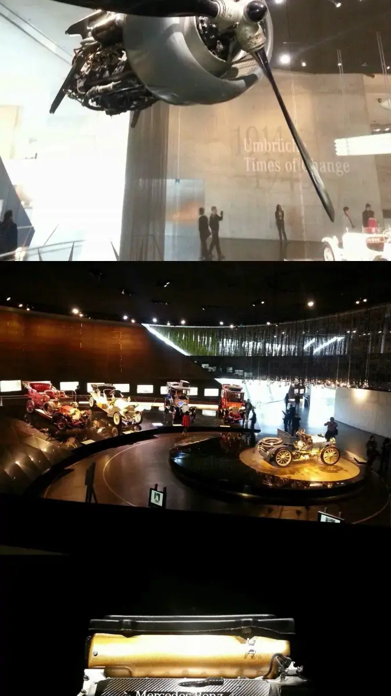

塞尔维亚市场交流｜中国企业进入欧洲的新机遇
A global pioneer's practical guide to going global in Europe — cost restructuring, compliance, and the Serbia springboard.
— 1 — 中文版 / Chinese version（英文见第二部分）

中企出海欧洲：破局者的实战指南
欧洲市场正在经历结构性洗牌。过去几年，海鑫汇创始人董立鑫多次走访德国、法国、匈牙利、捷克、斯洛伐克等十余个国家， 与17家出海企业深度沟通后，发现三个关键趋势：新能源车本土化进程加速、跨境电商合规成本飙升、区域总部向中东欧转移。 这些变化背后，是中国企业必须直面的真实挑战。
一、欧洲市场新趋势
1. 成本重构
- 西欧运营成本年均增长约11%（来源：欧盟统计局2023年报）
- 塞尔维亚工程师薪资约为德国1/3（来源：SBG 2023薪酬报告）
2. 合规升级
- 德国EPR法规处罚超30%违规卖家（来源：德国环保局公开数据）
- 法国2025年将实施碳关税（来源：法国财政部法案公示）
3. 人才争夺
- 波兰技术岗流动率约28%（来源：波兰就业局年度白皮书）
二、行业变化：把钱花在刀刃上
▶ 跨境电商卖家：提升本地化服务
典型困境
- 客服响应超48小时导致退货率激增（来源：某头部跨境卖家内部数据）
- 小语种文档错误引发批量退运（欧洲客户实证案例）
海鑫汇 × 欧洲本地战略伙伴破局方案
- 25语种客服覆盖：英/法/德等主流语种 + 匈牙利/克罗地亚等小语种
- 文档本地化审核：在贝尔格莱德设多语种中心
- 税务托管：EPR代缴服务降低违规风险（已服务52家客户）
▶ 新能源车的欧盟通行证
典型困境
- GDPR罚款可达全年利润20%（来源：欧盟数据保护委员会案例库）
- 工程师招聘周期超5个月（来源：某储能企业欧洲招聘记录）
海鑫汇 × 欧洲本地战略伙伴破局方案
- GDPR护航：塞尔维亚GDPR认证中心 + 德国法律顾问双审核
- 60天建团队：依托海鑫汇欧洲人才库快速组队（实证案例）

三、中企出海高频雷区与应对
结合海鑫汇欧洲服务经验，这些痛点最需前置解决。
1. 财务陷阱
案例：某光伏企业因误判欧盟临时进口规则（货物滞留超24个月），被追缴5年VAT及滞纳金83万欧元。
解法：合作当地银行开通绿色通道，同步推进海关申报 + 税务备案，缩短资金解冻周期2个月。
2. 法律暗礁
案例：中企在德国要求员工日均工作11.5小时，违反《禁止强迫劳动法》，面临产品禁售风险。
数据：德国规定每日工时≤10小时，解雇需劳工法院批准，补偿可达2年工资。
解法：定制本土劳动合同（覆盖英法德等15国），禁用"工时排名"等违规条款。
3. 人力断层
数据：中东欧销售岗3个月离职率超40%，73%在欧中企因《外国补贴法规》(FSR)加剧人才流失。
解法：属地化管理（驻场经理7×24小时维稳），通过员工持股计划降低流动率。
4. 调研失真
案例：某扫地机企业误判德国渠道需求，库存积压超2亿欧元（主因未识别线下渠道占70%）。
解法：本土神秘采购 + 商圈普查（覆盖15国），识别渠道盲区。
数据来源：欧盟统计局、德国环保局、波兰就业局等

四、为什么选择全欧协同作战
海鑫汇网络正在改写企业出海成本公式：
- 多枢纽运营：伦敦处理高端市场，贝尔格莱德承接批量业务，伊斯坦布尔覆盖俄语区
- 成本杠杆：塞尔维亚人力成本仅为荷兰的1/3，德国1/4
- 速赢案例：某充电桩企业通过欧洲战略伙伴布达佩斯团队，3个月拿下奥地利最大分销商
"用塞尔维亚的运营成本，获取德国市场收益——这才是新出海时代的生存逻辑。"
—— 海鑫汇服务客户、新能源企业手记

— 2 — 英文版 / English version

Chinese Enterprises Going Global in Europe: A Global Pioneer's Practical Guide
The European market is undergoing structural transformation. Over recent years, Bruce Dong, founder of Global Elite Network, visited over ten countries including Germany, France, Hungary, Czech Republic, and Slovakia. After in-depth discussions with 17 overseas enterprises, three key trends emerged: accelerated localization of new energy vehicles, surging compliance costs for cross-border e-commerce, and regional headquarters relocating to Central and Eastern Europe. Behind these shifts lie real challenges Chinese companies must confront.
I. New Trends in the European Market
Cost Restructuring
- Western Europe operational costs rise ~11% annually (Source: Eurostat 2023 Report)
- Serbian engineers' salaries ≈ 1/3 of Germany's (Source: SBG 2023 Compensation Report)
Compliance Upgrades
- Germany's EPR penalties affect >30% non-compliant sellers (Source: German Environmental Agency Public Data)
- France to implement carbon tariffs in 2025 (Source: French Ministry of Finance Bill Announcement)
Talent Competition
- Poland tech job turnover rate ~28% (Source: Polish Employment Bureau Annual White Paper)
II. Industry Shifts: Strategic Resource Allocation
▶ Cross-Border E-commerce Sellers: Elevating Localized Services
Typical Challenges
- 48h customer response time triggering surge in returns (Source: Top cross-border seller internal data)
- Minor-language documentation errors causing batch returns (European client case study)
Global Elite Network × European Strategic Partners Approach
- 25-language customer support: English/French/German + Hungarian/Croatian minor languages
- Document localization review: Multilingual center in Belgrade
- Tax hosting: EPR payment services cutting compliance risks (52 clients served)
▶ New Energy Vehicles: Securing EU Market Access
Typical Challenges
- GDPR fines up to 4% of global revenue (Source: EU Data Protection Board Case Library)
- Engineer hiring cycles >5 months (Source: Energy storage firm EU recruitment records)
Global Elite Network × European Strategic Partners Approach
- GDPR Compliance Framework: Serbia certification center + German legal dual audit
- 60-day team deployment: Rapid recruitment via Global Elite Network talent pool (validated case)

III. High-Frequency Pitfalls & Solutions
Financial Traps
Case: A solar firm misjudged EU temporary import rules (goods delay>24 months), facing €830k in 3-year VAT + penalties.
Approach: Partner local banks for expedited clearance, synchronize customs + tax filing, reducing fund freeze by 2 months.
Legal Compliance Risks
Case: A Chinese firm in Germany required 11.5h daily work, violating the Working Time Act, facing litigation risks.
Data: Germany caps daily work at ≤10h, dismissals require labor court approval.
Approach: Custom local contracts (15 countries coverage), prohibiting non-compliant clauses.
Talent Retention Crisis
Data: Central & Eastern Europe sales roles see >40% attrition in 3 months; 73% EU-based Chinese firms lose talent due to FSR (Foreign Subsidy Regulation).
Approach: Localized stewardship (on-site managers 24/7 support), reducing turnover via equity incentives.
Market Research Blind Spots
Case: A cleaning appliance firm misread German channel demand, causing €200m+ inventory backlog (70% offline channels overlooked).
Approach: Local mystery shopping + commercial district mapping (15 countries), identifying channel gaps.
Data Sources: Eurostat, German Environmental Agency, Polish Employment Bureau, etc.
IV. Why Choose Pan-European Collaboration
Global Elite Network is redefining the cost equation for global expansion:
- Multi-Hub Strategy: London (premium markets), Belgrade (volume operations), Istanbul (Russian-speaking regions)
- Cost Efficiency: Serbia's labor costs = 1/3 of Netherlands, 1/4 of Germany
- Accelerated Success Case: A charging firm secured Austria's largest distributor via Budapest team in 3 months.
"Leveraging Serbia's operational efficiency to capture Germany's market returns—this defines the new globalization paradigm."
— Global Elite Network client, new energy enterprise
本文内容整理自海鑫汇活动记录，首发于海鑫汇官方公众号（2025年8月）。 查看公众号原文 →